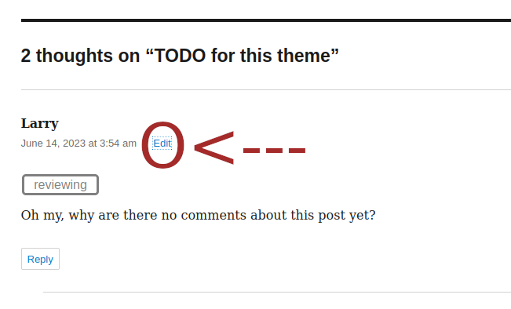

| Plugin is designed to allow users to add labels or badges to each comment thread throughout the website blog page.
Labels can be used to sort comments---sort of like a category---or add a label to each comment reply to set the status of the comment.
|
| _ |
| Labels formal name of labels which are used to render labels |
- cmbd_closed
- cmbd_completed
- cmbd_reviewing
- cmbd_pending
- cmbd_planned
- cmbd_notplanned
- cmbd_archived
- cmbd_onhold
- cmbd_release
- cmbd_prerelease
- cmbd_tagged
- cmbd_duplicate
- cmbd_backlog
- cmbd_waiting
These are the string names that get copied to the comments metadata box in the comments editor page. |
| _ |
Assigning a Label to a Comment Thread |
| Assigning labels can be done by admins or editors only. Just click on EDIT of the themes comment thread you want to edit. |
|  |
| This will take you to the comment editor page. At the bottom of the page there is a section "Comment Classification:" where you can change the label. Be sure to save comment when complete. |
| The metadata input name is "commbadge_badge" and it is stored as commentmetadata in the database. |
| _ |
|
|
|
|